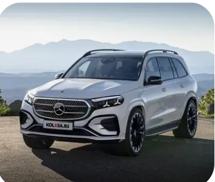

Mercedes-Benz, founded in 1926, is one of the oldest car manufacturers in the world. It was established by the merger of Carl Benz's company, Daimler-Motoren-Gesellschaft, and Gottlieb Daimler's company, Daimler-Benz. The brand's roots trace back to the 1886 Benz Patent-Motorwagen, which is widely recognized as the first automobile powered by an internal combustion engine. Mercedes-Benz has been a pioneer in automotive technology, blending engineering prowess with luxury and performance. The company has played a pivotal role in motorsport and has embraced green technology while maintaining its dedication to quality and luxury.
BENZ FIRST PRODUCTION CAR
CARL BENZ THE FOUNDER OF BENZ
Carl Friedrich Benz was born in Mühlburg, Germany, to a locomotive driver and his wife. After his father's death when he was just two years old, his mother worked hard to provide him with a good education. Benz showed an early aptitude for mechanics and engineering, eventually studying at the Karlsruhe Polytechnic School, where he graduated in 1864 with a degree in mechanical engineering. .

WILLHEIM MAYBACH THE ENGINEERING WIZARD
Wilhelm Maybach, born in 1846 in Heilbronn, Germany, was a visionary engineer and close collaborator of Gottlieb Daimler. He played a crucial role in the development of the internal combustion engine and the automobile. Maybach's innovative designs and engineering expertise were instrumental in creating some of the earliest automobiles, including the first Mercedes-Benz models. His contributions to automotive engineering have left a lasting legacy, making him a key figure in the history of the automobile industry.

Hyper cars
SUVs
SPORT CARS Sport cars are cars built explicitly for dynamic performance,spirited driving nd agility.they r typically lightweight, feature two seats, nd emphasize handling nd acceleration over passengers space. nd there r engineered by mercedes AMG performance line. Some of benz sport cars r listed below;

SUPER CARS
supercar, also known as an exotic car, is a street-legal sports car with race track-like power, speed, and handling, plus a certain subjective cachet linked to pedigree and/or exclusivity. The term 'supercar' is frequently used for the extreme fringe of powerful, low-bodied mid-engine luxury sportscars. A low-profile car may have limited ground clearance, but a handling-favorable center of gravity and a smaller frontal area than a front engined car.

HYPER CARS
A hypercar is defined as a high-performance vehicle that represents the pinnacle of automotive engineering, combining luxury, cutting-edge technology, and exceptional speed. Hypercars typically exceed 200 mph and can reach speeds of 250-300 mph, with acceleration times often under 3 seconds from 0 to 60 mph. They are characterized by their use of advanced materials like carbon fiber and hybrid powertrains, making them both technologically advanced and extremely expensive, often exceeding $1 million in price.

FORMULAR 1 CARS
A Formula 1 car, specifically a Mercedes-Benz F1 car, is a high-performance racing vehicle designed for speed and precision. These cars are built using advanced materials and technology, including lightweight carbon fiber chassis and hybrid power units. The current Mercedes-AMG Petronas F1 Team competes in Formula 1, utilizing Mercedes-Benz's engineering expertise to develop competitive racing cars. The cars are known for their exceptional speed, aerodynamics, and engineering innovations, making them a symbol of automotive excellence in motorsport.

LUXURY CARS
Luxury cars are vehicles that offer a high level of comfort, quality, and performance. They are designed with premium materials, advanced technology, and superior craftsmanship to provide an exceptional driving experience. Mercedes-Benz is renowned for its luxury cars, which combine elegance, innovation, and performance. These vehicles often feature state-of-the-art infotainment systems, advanced safety features, and powerful engines, catering to those who seek both style and substance in their automobiles. Mercedes benz luxury company is called MAYBACH.

SUVs
Like Dislike Mercedes-Benz offers a diverse range of SUVs designed to meet various lifestyle needs, combining luxury, performance, and advanced technology. Range of Models Mercedes-Benz has a comprehensive lineup of SUVs, including:
The compact SUV that offers agility and versatility, perfect for urban driving. A slightly larger option with a spacious interior and available third-row seating. A mid-size SUV that balances performance and comfort, ideal for families. A larger SUV that provides advanced technology and luxury features. The flagship full-size SUV, offering maximum space and luxury for larger families or groups. G-Class: The iconic off-road vehicle known for its ruggedness and luxury, often referred to as the "G-Wagen."
BLACK SERIES
The Mercedes-Benz Black Series is a high-performance line of vehicles from the AMG division, characterized by their stripped-down luxury features and motorsport-inspired design. Introduced in 2006, the Black Series models are known for their enhanced power, lightweight materials, and track-focused performance. Each model represents a milestone in vehicle technology, with only a select few deemed worthy of the Black Series badge, emphasizing a focus on raw performance and handling dynamics. The series began with the SLK 55 AMG Black Series and has since expanded to include six models, each designed to push the boundaries of performance.

Click here to check my certificate
Central Cee - 6 For 6